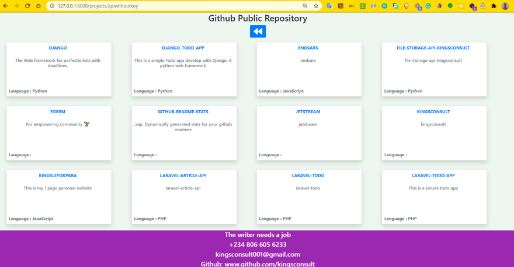

Today, I am going to show you how to consume RESTful APIs, in my previous post I discuss How to Create a Secure CRUD RESTful API in Laravel 8 and 7 Using Laravel Passport, the article teaches you how to create a RESTful API and also securing the API with Passport, Laravel Passport is the official OAuth2 server for Laravel apps. It provides you with a full OAuth2 server implementation.
But in this article, we are only going to be discussing how to consume external API. Why some APIs are authenticated which will require providing a token in order to access the API, others are not authenticated, which means you can access the API without a token.
This article will show you how to implement the two instances. We are going to be using the code from my previous article Laravel 8 CRUD App, A simple guide, this is the GitHub repo for the code snippets.
Click on my profile to follow me to get more updates.
Step 1: Setup the app
- git clone https://github.com/Kingsconsult/laravel_8_crud.git
- cd laravel_8_crud/
- composer install
- npm install
- cp .env.example .env
- php artisan key:generate
- Add your database config in the .env file (you can check my articles on how to achieve that)
- php artisan migrate
- php artisan serve (if the server opens up, http://127.0.0.1:8000, then we are good to go)
- Navigate to http://127.0.0.1:8000/projects
Step 2: Make sure Guzzle package is installed
By default, Laravel automatically includes this Guzzle as a dependency when you install Laravel, check your composer.json, if it is one of the required dependency, if you did not see it, or you want to update
composer require guzzlehttp/guzzle
Step 3: Create routes
Modify the routes/web.php file to this
<?php
use Illuminate\Support\Facades\Route;
use App\Http\Controllers\ProjectController;
/*
|--------------------------------------------------------------------------
| Web Routes
|--------------------------------------------------------------------------
|
| Here is where you can register web routes for your application. These
| routes are loaded by the RouteServiceProvider within a group which
| contains the "web" middleware group. Now create something great!
|
*/
Route::get('/', function () {
return view('welcome');
});
Route::prefix('projects')->group(function () {
Route::get('apiwithoutkey', [ProjectController::class, 'apiWithoutKey'])->name('apiWithoutKey');
Route::get('apiwithkey', [ProjectController::class, 'apiWithKey'])->name('apiWithKey');
});
Route::resource('projects', ProjectController::class);
We added two get routes, one for an API without key (unauthorized) and another with key (authorized).
Step 4: Create Controller methods
In our routes, we indicate that we have two more routes, so we need to write the methods, go to app/Http/Controller/ProjectController.php, and add the following methods
First, call the Guzzle class before the controller class, directly under the namespace
use GuzzleHttp\Client;
public function apiWithoutKey()
{
$client = new Client(); //GuzzleHttp\Client
$url = "https://api.github.com/users/kingsconsult/repos";
$response = $client->request('GET', $url, [
'verify' => false,
]);
$responseBody = json_decode($response->getBody());
return view('projects.apiwithoutkey', compact('responseBody'));
}
public function apiWithKey()
{
$client = new Client();
$url = "https://dev.to/api/articles/me/published";
$params = [
//If you have any Params Pass here
];
$headers = [
'api-key' => 'k3Hy5qr73QhXrmHLXhpEh6CQ'
];
$response = $client->request('GET', $url, [
// 'json' => $params,
'headers' => $headers,
'verify' => false,
]);
$responseBody = json_decode($response->getBody());
return view('projects.apiwithkey', compact('responseBody'));
}
Explanation
- I instantiate the client class from guzzle.
- I assign the API URL to a variable (I used GitHub API for my public repositories, this is a public API that fetches one's public GitHub repositories), this API does not require a token for authorization.
- I use the request method of the client, it accepts 3 parameters ($method, $url, $options), the $options is where we pass our token if the API requires one, also I passed another option, verify, to be false.
- Finally, I convert my response to a json format, so I can pass it to the view.
The second method is for an API that requires authorization, I used dev.to API, this API fetches all my published articles and also all the stats for each article, I passed the api key to the options, I assigned it to a variable call headers.
Step 5: Create the views
I created separate views for the two API
resources/views/projects/apiwithoutkey.blade.php
@extends('layouts.app')
@section('content')
<style>
</style>
<div class="row mb-3">
<div class="col-lg-12 margin-tb">
<div class="text-center">
<h2>Github Public Repository</h2>
<a class="btn btn-primary" href="{{ route('projects.index') }}" title="Go back"> <i class="fas fa-backward fa-2x"></i> </a>
</div>
</div>
</div>
<div class="container-fluid mb-5" style="margin-bottom: 150px !important">
<div class="row mr-4">
@foreach ($responseBody as $response)
<div class="col-xl-3 col-md-6 mb-4 hvr-grow ">
<a href="{{ $response->html_url }}" class="text-muted">
<div class="card shadow py-0 rounded-lg ">
<div class="card-body py-2 px-2">
<div class="row no-gutters align-items-center">
<div class="col mr-2">
<div class=" font-weight-bold mb-4 mt- 2 text-primary text-center text-uppercase mb-1">
{{ $response->name }}
</div>
<div class="h6 mb-0 text-gray-800 text-center">{{ $response->description }}
@if ($response->description == null)
{{ $response->name }}
@endif
</div>
</div>
</div>
<div style="position: absolute; bottom: 0" class="mb-2"> <strong>
<hi>Language : {{ $response->language }}
</strong></hi>
</div>
</div>
</div>
</a>
</div>
@endforeach
</div>
</div>
@endsection
resources/views/projects/apiwithkey.blade.php
@extends('layouts.app')
@section('content')
<style>
</style>
<div class="row mb-3">
<div class="col-lg-12 margin-tb">
<div class="text-center">
<h2>Dev.to Article stats</h2>
<a class="btn btn-primary" href="{{ route('projects.index') }}" title="Go back"> <i class="fas fa-backward fa-2x"></i> </a>
</div>
</div>
</div>
<div class="container-fluid mb-5" style="margin-bottom: 150px !important">
<div class="row mr-4">
@foreach ($responseBody as $response)
<div class="col-xl-3 col-md-6 mb-4 hvr-grow ">
<div class="card shadow py-0 rounded-lg ">
<div class="card-body py-2">
<div class="row no-gutters align-items-center">
<div class="col mr-2">
<a href="{{ $response->url }}" class="text-muted">
<div class=" font-weight-bold mb-2 mt-2 text-primary text-center text-uppercase mb-1">
{{ Str::limit($response->title, 45) }}
</div>
</a>
<div class="h6 mb-0 text-gray-800 text-center">
{{ Str::limit($response->description, 100) }}
</div>
</div>
</div>
<div style="position: absolute; bottom: 0" class="mb-2">
<hi>Page Views: <strong>{{ number_format($response->page_views_count) }}</strong></hi>
<hi class="ml-3"> Reactions: <strong>{{ $response->positive_reactions_count }} </strong></hi>
</div>
</div>
</div>
</div>
@endforeach
</div>
</div>
@endsection
Testing
Go to the index page of projects http://127.0.0.1:8000/projects
http://127.0.0.1:8000/projects/apiwithkey
http://127.0.0.1:8000/projects/apiwithoutkey

You can get the complete code from the repo.
Follow me for more of my articles, you can leave comments, suggestions, and reactions
click the link to view my profile and follow me
Visit my other posts

.png)
{kind=link}
{kind=link}
{kind=link}
Top comments (6)
Hi, how would be the best way in laravel, to make a form that sends data to a crud restapi with json through post, and put for the create and update functions?
I mean there is a lot of tutorials on how to consume restful services using GET to make a query and making tables, but there's nothing on using POST, PUT and DELETE to create, update and delete.
Hi @tassadar45 , Which API gives you the access to update their API or create records. If given endpoints for creating and updating , then it is possible
Got any thoughts as to how that can be extended consuming API's that have to be authenticated with a token similar to github.com/WildApricot/ApiSamples/... ?
Essentially fulfilling the same process as this code?:
This has been helpful , had to make modifications , very good foundation of consuming apis.
What about put , delete, post request?
Accidentally found the link in the repo readme.md as
https://dev.to/kingsconsult/laravel-8-crud-bi9